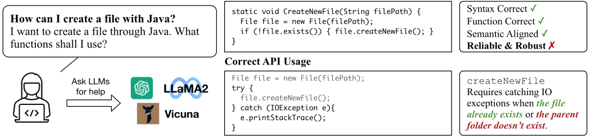
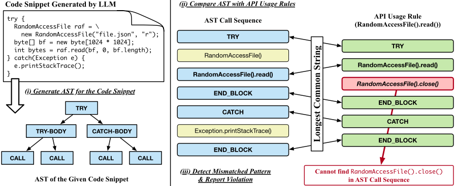
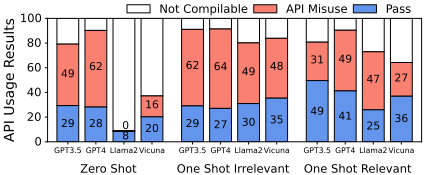
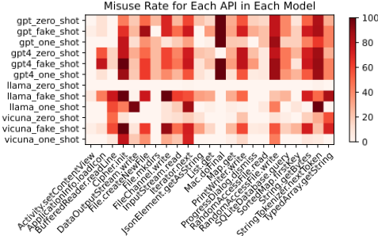

LLM 能取代 Stack Overflow 吗？大型语言模型代码生成的鲁棒性与可靠性研究
论文针对现有代码生成评测只看功能正确性、且数据多来自编程竞赛题、偏离真实开发场景的问题，构建了 ROBUSTAPI 基准：从 Stack Overflow 收集 1208 个涉及 18 个易误用 Java API 的真实提问，总结出 41 条 API 使用规则，并用基于 AST 的静态分析将生成代码的调用序列与规则比对来检测 API 误用。对 GPT-3.5、GPT-4、Llama2、Vicuna-1.5、DeepSeekCoder 的评测显示，可编译答案中 57-70% 含 API 误用，GPT-4 也有 62% 的生成代码存在误用，且 zero-shot 下误用率反而高于 GPT-3.5。关键提示工程结论是：在提示中加入同 API 的正确用法示例（one-shot-relevant）能显著降低误用率，而把规则文字直接写进提示或调整温度都无明显效果。对团队而言，这为代码生成/审查工具的可靠性评测提供了可直接复用的开源数据集与方法。
现有代码生成评测基准聚焦功能正确性和编程面试式小任务，偏离开发者真实咨询 LLM 的场景；LLM 生成的代码即使可执行、语义正确，也可能存在 API 误用（如缺少异常捕获、未关闭文件流、缺少边界检查），会在生产中引发资源泄漏、程序崩溃等严重后果，而这种可靠性与鲁棒性此前缺乏系统性的评测手段。
构建 ROBUSTAPI 基准：（1）基于 ExampleCheck 数据集选取 18 个易误用的 Java API（覆盖字符串处理、数据结构、移动开发、加密、I/O、数据库 6 个领域），从 Stack Overflow 爬取 1208 个有答案且答案含 API 误用的真实问题；（2）将 API 使用规则形式化为结构化调用序列，共总结 41 条经文档验证的规则（前置守卫条件、必需调用顺序、控制结构如 try-catch）；（3）设计基于 AST 的静态分析 checker，提取生成代码的方法调用序列与控制结构，与规则做最长公共子序列匹配来判定误用，比关键词匹配等规则方法更准确；（4）在 zero-shot、one-shot-irrelevant、one-shot-relevant 三种提示设置下评测 GPT-3.5、GPT-4、Llama2、Vicuna-1.5、DeepSeekCoder，并做温度鲁棒性与把规则文字写入提示的对比实验。
可编译答案中 57-70% 的 LLM 回答含 API 误用，可能在生产中造成严重后果（Finding 2）
GPT-4 有 62% 的生成代码含 API 误用，且 zero-shot 下误用率高于 GPT-3.5
GPT-4 可编译性最好，所有实验设置下不可编译答案低于 10%；加入 few-shot 示例可降低所有模型的编译失败率
one-shot-relevant（同 API 的正确用法示例）显著降低 GPT-3.5、GPT-4、Vicuna 的误用率，但对 Llama2 无改善（Finding 4）
one-shot-irrelevant 不降低误用率反而略升（可能因诱导更长代码），但能触发更多含代码的有效答案，利于评测（Finding 3）
改变温度或用 API 使用规则文字替换 one-shot 示例，对误用率无显著影响（Finding 5）
代码专精模型 DeepSeekCoder 生成更多可编译样本，但误用率相比其他模型无显著优势
数据集规模：1208 个问题、18 个 Java API、41 条使用规则；静态分析执行时间均在 7 分钟内
区别于以测试用例执行、功能正确性为核心的 HumanEval 类基准，该工作首个聚焦真实软件开发场景下 API 误用与可靠性的 LLM 代码生成评测基准：数据来自 Stack Overflow 真实问题而非竞赛题，评测手段采用 AST 静态分析加形式化 API 使用规则（结构化调用序列）而非测试用例，为 LLM 代码评测提供了功能正确性之外的新维度。
相关度级别：high
命中能力域：3.5 评测与可靠使用 | 3.2 提示工程
理由：团队核心职责包括代码生成与审查工具的建设以及产出质量与可靠性的评测保障，本文正是 LLM 代码生成可靠性评测基准与实证研究，直接命中 3.5（评测基准与方法、可靠性、AI 辅助工程实证）；其实验系统比较了 zero-shot / one-shot-irrelevant / one-shot-relevant 以及把 API 规则文字写入提示的效果，得出'相关 few-shot 正确示例比规则文字更有效'的可操作提示工程结论，命中 3.2。论文不涉及模型训练，与团队'用好模型'的定位完全一致。
建议动作：深入精读并做内部分享
arXiv:2308.10335v5 [cs.CL] 2024年1月27日
Li Zhong, Zilong Wang
加州大学圣地亚哥分校 lizhong@ucsd.edu, zlwang@ucsd.edu
近年来，大语言模型（Large Language Models, LLMs）在理解自然语言和生成程序代码方面展现出了非凡的能力。软件工程师在遇到编程问题时咨询 LLMs 已成为一种普遍做法。尽管已有诸多努力致力于避免语法错误并使代码符合预期语义，但 LLMs 代码生成的可靠性与鲁棒性尚未得到深入研究。可执行的代码并不等同于可靠且鲁棒的代码，尤其是在真实世界软件开发的场景下。例如，生成代码中对应用程序编程接口（API）的误用可能导致严重问题，如资源泄漏、程序崩溃等。现有的代码评估基准测试（benchmark）和数据集侧重于构建小型任务，例如编程面试中的编程题。然而，这偏离了开发者通常向 LLMs 咨询的问题类型。为填补这一空缺，我们提出了一个数据集 ROBUSTAPI，用于评估 LLMs 所生成代码的可靠性与鲁棒性。我们从 Stack Overflow 上收集了 1208 个关于 18 个代表性 Java API 的编程问题。我们总结了这些 API 的常见误用模式，并在当前流行的 LLMs 上进行了评估。评估结果表明，即使是 GPT-4，其生成的代码中也有 62% 包含 API 误用。如果这些代码被引入真实世界的软件中，将会造成意想不到的后果。
众多研究工作致力于避免生成代码中的语法错误并提升语义理解（Xu et al. 2022; Chen et al. 2021; Shen et al. 2023a; Luo et al. 2023）。与在线编程论坛不同，生成的代码片段不会经过社区同行的审查，因此存在 API 误用问题，例如文件读取和变量索引中缺少边界检查、缺少文件流关闭、事务完成失败等。即使代码样本是可执行的或功能正确的，误用也可能在生产环境中引发严重的潜在风险，例如内存泄漏、程序崩溃、垃圾回收失败等，如图 1 所示。更糟糕的是，如果提问的程序员对这些 API 尚不熟悉，无法识别生成代码片段中的违规之处，他们可能更容易受到此类风险的影响。因此，在评估大语言模型的代码生成时，考量代码可靠性至关重要。

一次编写，到处运行（WORA）特性 1。对于每个问题，我们提供了详细的描述以及相关的 Java API。我们设计了模板来触发大语言模型（LLM）生成代码片段及相应的解释。我们还提供了一个评估器，该评估器使用抽象语法树（AST）分析生成的代码片段，并将其与预期的 API 使用模式进行比较。遵循 Zhang 等人（2018）的方法，我们将 API 使用模式形式化为结构化调用序列，如图 2 所示。这些结构化调用序列展示了应如何正确使用这些 API 以消除潜在的系统风险。从软件工程的角度来看，任何违反此类结构化调用序列的行为都将被视为 API 误用。
我们从 Stack Overflow 收集了 1208 个真实问题，涉及 18 个具有代表性的 Java API。我们在闭源语言模型（GPT-3.5 和 GPT-4（OpenAI 2023a））以及开源语言模型（Llama-2（Touvron et al. 2023）、Vicuna1.5（Chiang et al. 2023））上进行了实验。我们使用模型的默认超参数设置，未进行大量的超参数调优。我们进一步设计了两种实验设置：零样本（zero-shot）和单样本（one-shot），即在提示（prompt）中不提供或仅提供一个示例样本。我们对生成的代码进行了全面分析，并研究了当前大语言模型常见的 API 误用案例。我们希望提出大语言模型代码生成中 API 误用这一重要问题，并在常用的功能正确性之外，为评估大语言模型提供一个新的维度。这一基准测试（benchmark）的主要目的不是评估生成代码的功能正确性，而是关注可靠性与鲁棒性。我们希望这项工作能够促进该主题的未来研究，并帮助基于大语言模型打造更健壮的编程助手，从而向真正的人工通用智能（AGI）更进一步。我们在 GitHub 2 上开源了我们的数据集和评估器。我们将我们的贡献总结如下。
1 https://en.wikipedia.org/wiki/Java (programming language)
2 https://github.com/FloridSleeves/RobustAPI
随着 Copilot (Chen et al. 2021) 及其他基于大语言模型（LLM）的商业代码辅助工具的发布，这些工具的安全性和代码质量逐渐受到研究界的关注。Yetistiren、Ozsoy 和 Tuzun (2022) 从编译正确性、功能正确性和代码效率等方面评估了 LLM 生成代码的质量。Siddiq et al. (2022) 研究了 LLM 生成代码中的代码坏味（code smells），即代码中的不良设计，例如异常冗长的方法或重复的代码。Poesia et al. (2022) 表明，LLM 可能会在代码中犯下实现错误，例如语法错误，或偏离用户意图的语义错误。Jesse et al. (2023) 研究了 Codex 和其他 LLM 中的简单而愚蠢的缺陷（simple, stupid bugs），结果表明 AI 代码助手可以帮助避免部分此类简单缺陷，但更有可能引入难以检测的缺陷。在安全影响方面，Pearce et al. (2022) 设计了 89 个安全敏感场景，让 Copilot 为用户补全代码，结果显示约 40% 的代码存在漏洞。Perry et al. (2022) 开展了首个大规模用户研究，以检验与 AI 代码助手交互的用户是否会编写安全的代码。他们发现，这些用户编写的代码安全性显著更低，但他们却认为自己的代码是安全的。Sandoval et al. (2023) 开展了一项用户研究，评估由基于 AI 的编码助手生成的、涉及指针和数组操作的低层代码的安全性。他们发现，在这一特定场景下，这些助手并不会比人类引入更多的安全缺陷。Liu et al. (2023) 通过生成覆盖率更高的测试用例来扩充 HumanEval (Chen et al. 2021)，作为现有编程基准测试（benchmark）的补充，但其评估仍然聚焦于功能正确性和简单的编程问题，与实际软件开发相距甚远。Shen et al. (2023b) 通过在对抗样本上进行测试来评估 ChatGPT 的可靠性，但“可靠性”在其语境中具有不同的含义。在本文中，我们将可靠性定义为代码抵御失效、高负载和意外输入的能力。
软件工程领域的现有文献已经研究了来自在线论坛的代码质量，并就潜在问题向开发者发出了警告。Yang、Hussain 和 Lopes (2016) 发现，Stack Overflow 回答中给出的大多数代码示例无法通过编译。Zhou 和 Walker (2016) 指出，在他们调查的帖子中有 43% 包含已弃用的 API，而 Fischer et al. (2017) 发现 29% 的代码存在安全风险。在 Zhang et al. (2018) 中，作者通过调用序列提取和切片对代码进行分析，并将其与经过人工验证的 API 使用规则进行比较，得出结论：Stack Overflow 回答中 31% 的代码示例包含 API 误用，可能产生意外行为。
在本节中，我们介绍 ROBUSTAPI，这是一个用于全面评估大语言模型（LLM）生成代码的可靠性与鲁棒性的基准测试（benchmark）。我们描述了在构建数据集时进行数据收集和提示生成（prompt generation）的过程。随后，我们展示 ROBUSTAPI 中所评估的 API 误用模式，并讨论违反这些模式可能带来的潜在后果。最后，我们介绍 ROBUSTAPI 中用于检测 API 使用违规的静态分析方法，该方法利用抽象语法树，与关键词匹配等基于规则的方法相比，在评估 LLM 生成代码中的 API 误用时能够取得更高的评估准确度。
为了充分利用软件工程领域已有的研究成果，我们以 ExampleCheck（Zhang et al. 2018）的数据集为起点构建了 ROBUSTAPI。ExampleCheck 旨在研究在线问答论坛中频繁出现的 Java API 误用现象。我们从该数据集中选取了 18 个流行的 Java API，如表 1 所示。这 18 个 API 涵盖 6 个领域，包括字符串处理、数据结构、移动开发、加密、I/O 和数据库操作。随后，我们从 Stack Overflow 上爬取与这些 API 相关的问题。我们只选择有在线回答的问题，并保留所提供答案中包含 API 误用的问题。通过这种方式，我们保证了 ROBUSTAPI 中的问题是可回答且非平凡的，从而能够用它们有效评估大语言模型（LLM）回答那些人类容易犯错的编程问题的能力。经过筛选，我们共获得 1208 个问题。各领域问题的分布情况如表 1 所示。
| API | Domain | Conseq* | Github* |
|---|---|---|---|
| StringTokenizer.nextToken | String | (iii) | 13.3K |
| String.getBytes | Process | (iii) | 88.1K |
| JsonElement.getAsString | (307) | (iii) | 4.4K |
| List.get | Data | (iii) | 2.7M |
| Map.get | Structure | (iii) | 2.4M |
| Iterator.next | (404) | (iii) | 918K |
| ProgressDialog.dismiss | Mobile | (iii) | 54K |
| TypedArray.getString | Develop | (iv) | 6.8K |
| ApplicationInfo.loadIcon | (75) | (v) | 3.6K |
| Activity.setContentView | (v) | 4.6K | |
| Cipher.init | Crypto (10) | (iii) | 66.3K |
| RandomAccessFile.write | (i) | 129K | |
| BufferedReader.readLine | (iii) | 74.8K | |
| PrintWriter.write | I/O (390) | (i) | 1.1M |
| File.mkdirs | (ii) | 73.2K | |
| File.createNewFile | (i) | 176K | |
| FileChannel.write | (i) | 5.2K | |
| SQLiteDatabase.query | Database (22) | (iv) | 4K |
| Total | 1208 | 7.8M |
| API | Domain | Conseq* | Github* |
收集完这些问题后，我们将其转换为包含以下字段的 JSON 格式：{ id, api, question, origin }。id 字段包含我们为每个样本分配的唯一 id。api 字段包含我们特别指示 LLM 使用的 API，作为问题提示。question 字段包含 Stack Overflow 问题的标题和描述。origin 字段包含该样本的原始 URL。
在提示中，我们首先给出任务介绍以及所需的响应格式。然后，在少样本（few-shot）设置下进行实验时，我们会在其后附加关于该 API 的少样本示例。这些示例满足我们所提供的响应格式。接下来，我们附加问题本身以及与该问题对应的 API 提示。该提示模拟了用户在不提供来自 API 文档的任何额外提示的情况下提出编程问题的场景，这正是新手开发者向大语言模型（LLM）寻求帮助时的典型情形。由于最先进的大语言模型具有对话补全（chat completion）的特性，我们使用特殊标签将问题和答案包裹起来，以指示 LLM 生成问题的答案。该提示模板改编自 (Patil et al. 2023)，它可以帮助 LLM 遵循特定的生成模板，从而使我们能够从响应中提取出更多可编译的代码片段。
示例样本已被证明有助于大语言模型（LLM）理解自然语言。为了深入分析 LLM 的代码生成能力，我们设计了两种少样本（few-shot）设置：One-shot-irrelevant 和 One-shot-relevant。
在 one-shot-irrelevant 设置中，我们向 LLM 提供一个使用无关 API（例如 Arrays.stream）的示例。我们假设该示例能够消除生成代码中的语法错误。
在 one-shot-relevant 设置中，我们向 LLM 提供一个使用与给定问题相同 API 的示例。所提供的示例包含一对问题与答案。示例中的问题并不存在于测试数据集中，并且我们人工修改了答案，以确保其中不存在 API 误用，且其语义与问题良好对齐。
在使用语言库提供的 API 时，开发者需要遵循 API 的使用规则，以便充分发挥 API 的理想效果。违反这些规则、误用 API 可能会在生产环境中导致意外行为。一个典型的例子是文件操作。当通过 RandomAccessFile 打开并写入文件时，需要强制遵守两条使用规则：（1）读取文件可能抛出异常。如果在读取到预期字节数之前达到了缓冲区上限，该 API 会抛出 IndexOutOfBoundsException；此外，如果文件被其他进程并发关闭，该 API 会抛出 ClosedChannelException。为了处理这些异常，正确的实现应当将该 API 包裹在 try-catch 块中。（2）文件通道在使用后应当关闭。否则，如果这段代码位于一个长期运行且以多个实例并发运行的程序中，文件资源可能会被耗尽。因此，代码需要在所有文件操作完成后调用 close API。正确的用法如下所示：
正确的 API 用法：try { RandomAccessFile raf = new RandomAccessFile("/tmp/file.json", "r"); byte[] buffer = new byte[1024 * 1024]; int bytesRead = raf.read(buffer, 0, buffer.length); raf.close(); } catch(Exception e) { ... }
在 ROBUSTAPI 中，我们从这 18 个 API 中总结出 41 条 API 使用规则，这些规则均已在相应 API 的文档中得到验证（Zhang et al. 2018）。这些规则包括：（1）API 的守护条件（guard condition），应在调用 API 之前进行检查。例如，在调用 File.createNewFile() 之前检查 File.exists() 的结果。（2）API 的必需调用顺序，应按特定顺序调用。例如，在 File.write() 之后调用 close()。（3）API 的控制结构。例如，将 SimpleDateFormat.parse() 置于 try-catch 结构中。
现有评估大语言模型（LLM）生成代码的研究通常采用测试用例，这种方法在测试代码的可靠性和鲁棒性时存在不足。为应对这一具有挑战性的问题，我们在 ROBUSTAPI 中采用静态分析技术，该技术在检测 API 误用方面已有相对成熟的解决方案 (Zhang et al. 2018; Nguyen et al. 2014; Wang et al. 2013; Huang et al. 2023)。为评估代码中 API 使用的正确性，ROBUSTAPI 通过从源代码中提取调用后果和控制结构，依据 API 使用规则检测 API 误用，如图 2 所示。代码检查器首先检查代码片段，判断其是一个方法的片段还是类中的一个方法，以便将该代码片段包裹起来，并基于该代码片段构建抽象语法树（AST）。随后，检查器遍历 AST，按顺序记录所有方法调用和控制结构，从而生成调用序列。接下来，检查器将调用序列与 API 使用规则进行比对。它推断每个方法调用的实例类型，并以类型和方法作为键来检索相应的 API 使用规则。最后，检查器计算调用序列与 API 使用规则之间的最长公共序列。如果调用序列与预期的 API 使用规则不匹配，检查器将报告 API 误用。
在实验中，我们在四个大语言模型（LLM）上评估 ROBUSTAPI：GPT-3.5（OpenAI 2023a）、GPT-4（OpenAI 2023a）、Llama2（Touvron et al. 2023）、Vicuna-1.5（Chiang et al. 2023）。我们使用各模型的默认超参数设置，未进行进一步的大规模超参数调优。除非另有说明，所有实验结果均为 Pass@1。对于所有模型，我们评估三种实验设置：
用于少样本（shot）生成的示例由作者手动编写并经过双重检查。随后，这些示例会通过 API 使用检查器进行评估，以确保其与 API 使用规则保持一致。
为了定量评估生成代码的可靠性，我们定义了以下数值，我们的度量指标即基于这些数值计算得出。假设我们的数据集中共有 N 个问题，我们将它们划分为三组。

基于这些数值，我们定义了我们的度量指标。
我们基于 ROBUSTAPI 对最先进的大语言模型（LLM）进行了一系列实验，这些实验证明了 ROBUSTAPI 的可用性和有效性。这些实验就回答真实世界编程问题的能力，以及这些答案在 API 误用问题方面的鲁棒性和可靠性提供了深入见解。在实验中，我们试图回答以下问题：
首先，我们在图 3 的左侧展示了基于 ROBUSTAPI 的各模型 API 误用率。在该图中，API 误用率越高，该大语言模型代码的可靠性和鲁棒性就越差。API

误用率的计算方式是：将可编译且包含 API 误用的答案数量除以所有可编译的答案数量。从评估结果来看，所有被评估的模型都存在 API 误用问题，即使是 GPT-3.5 和 GPT-4 这样最先进的商业模型也不例外。在零样本（zero-shot）设置下，Llama 的 API 误用率最低。然而，这部分是由于 Llama 的大多数答案不包含任何代码。一个反直觉的发现是，GPT-4 的 API 误用率实际上高于 GPT-3.5，尽管 GPT-4 的编码能力已被证明“比其前代 GPT-3.5 先进 40%”（OpenAI 2023b）。我们还评估了一个代码专用的大语言模型 DeekSeekCoder(Piplani and Bamman 2018)，该模型在包括 Java 在内的多种编程语言上进行训练，并超越了现有的许多 Code LLM。我们报告了 deepseek-coder-6.7b-base 和 deepseek-coder-6.7b-instruct 的结果。我们观察到，代码专用的大语言模型能够生成更多可编译的样本。然而，其 API 误用率并未显著优于其他模型。这表明，尽管如今大语言模型的代码生成能力已得到大幅提升，代码在真实世界生产环境中的可靠性和鲁棒性却成为一个未被关注的问题。而这一问题仍有巨大的改进空间。
| Model | Zero-shot.Misuse Rate ↓ | Zero-shot.Compilable Rate ↑ | Zero-shot.Overall Misuse ↓ | One-shot-irrelevant.Misuse Rate ↓ | One-shot-irrelevant.Compilable Rate ↑ | One-shot-irrelevant.Overall Misuse ↓ | One-shot-relevant.Misuse Rate ↓ | One-shot-relevant.Compilable Rate ↑ | One-shot-relevant.Overall Misuse ↓ |
|---|---|---|---|---|---|---|---|---|---|
| GPT 3.5 | 62.97% | 79.14% | 49.83% | 68.09% | 91.06% | 62.00% | 38.56% | 80.71% | 31.13% |
| GPT 4 | 68.81% | 90.23% | 62.09% | 70.38% | 91.39% | 64.32% | 54.40% | 90.40% | 49.17% |
| Llama 2 ∗ | 7.34% ∗ | 9.02% ∗ | 0.66% ∗ | 61.36% | 80.13% | 49.17% | 64.47% | 72.93% | 47.02% |
| Vicuna 1.5 | 45.66% | 37.17% | 16.97% | 57.85% | 83.86% | 48.51% | 42.53% | 64.24% | 27.32% |
| ds-coder-6.7b-base | 41.55% | 40.65% | 16.89% | 75.60% | 95.90% | 72.43% | 64.12% | 67.14% | 43.05% |
| ds-coder-6.7b-instruct | 47.52% | 50.00% | 23.76% | 59.04% | 96.61% | 57.04% | 38.40% | 86.01% | 33.03% |
| Model | Zero-shot.Misuse Rate ↓ | Zero-shot.Compilable Rate ↑ | Zero-shot.Overall Misuse ↓ | One-shot-irrelevant.Misuse Rate ↓ | One-shot-irrelevant.Compilable Rate ↑ | One-shot-irrelevant.Overall Misuse ↓ | One-shot-relevant.Misuse Rate ↓ | One-shot-relevant.Compilable Rate ↑ | One-shot-relevant.Overall Misuse ↓ |
静态分析的执行时间如表 3 所示。时间上的差异源于各 LLM 不同的编码风格，且均不超过 7 分钟。
| 0 | 1 | 2 | 3 | 4 |
|---|---|---|---|---|
| GPT 3.5 | GPT 4 | Llama 2 | Vicuna 1.5 | DeepSeek-Coder |
| 6m 31s | 6m 56s | 6m 36s | 6m 19s | 6m 36s |
| 0 | 1 | 2 | 3 | 4 |
发现 1. 最先进的大语言模型对真实世界编程问题的回答普遍存在 API 误用问题。
在本实验中，ROBUSTAPI 提供一对问答作为示例，以向模型展示如何遵循指令所要求的模板。该示例不包含任何与 ROBUSTAPI 所检查的 API 用法相关的信息。结果如图 3 中部所示。然而，对于大多数模型而言，无关示例（irrelevant shot）并未显著降低 API 误用率，相反，误用率还略有上升。一个可能的原因是，提供给大语言模型的无关示例实际上鼓励模型给出冗长的代码解决方案，从而增加了 API 误用的机会。在加入无关示例后，Llama 的 API 误用率显著上升，这是因为其包含代码片段的有效答案更多。总体而言，加入无关示例会促使大语言模型生成更多有效答案，从而能够更好地评估代码的可靠性和鲁棒性。
发现 2. 在所有包含可编译代码的答案中，57-70% 的大语言模型答案存在 API 误用，这可能在生产环境中导致严重后果。
发现 3. 无关示例无助于降低 API 误用率，但会触发更多有效答案，这被证明对模型性能的基准测试（benchmark）评估是有效的。
在本实验中，ROBUSTAPI 在提示（prompt）中加入一个人工编写的示例（shot），该示例执行不同的任务，但使用相同的 API。这为大语言模型（LLM）如何正确使用这些 API 提供了提示。从结果来看，在加入正确用法示例后，GPT-3.5、GPT-4 和 Vicuna 的 API 误用率显著下降。这表明在该实验设置下取得了有效的改进。而对于 Llama，相关示例并未提升其性能。该实验表明，一些大语言模型能够有效地“学习”正确的 API 用法并遵循该用法。然而，由于现有的语言模型是使用来自代码仓库的数据进行训练的，如果训练数据集中包含大量 API 违规用法，语言模型就容易生成存在 API 误用的代码，这解释了零样本（zero-shot）和无关示例（one-shot-irrelevant）评估中 API 误用率较高的原因。我们在表 4 中展示了相关示例（one-shot-relevant）的 Pass@k 结果。
| Pass@k | Misuse Rate | Compilation Rate | Overall Misuse |
|---|---|---|---|
| Pass@1 | 39.06% | 76.08% | 29.72% |
| Pass@5 | 21.98% | 93.79% | 20.61% |
| Pass@10 | 16.51% | 96.27% | 15.89% |
| Pass@k | Misuse Rate | Compilation Rate | Overall Misuse |
发现 4. 一些大语言模型能够从正确用法示例中学习，从而降低 API 误用率。
我们在不同温度下评估了 GPT 3.5 上的基准测试（表 5）。从结果来看，改变温度并不会显著改变误用率和编译率。为了研究不同提示方法的效果，我们研究了当用 API 使用规则替换 one-shot 示例时，API 误用率如何变化。我们将符号化的规则输入 ChatGPT，从而得到自然语言形式的规则。我们将这些使用规则作为提示的一部分加入，并使用 ROBUSTAPI 对 GPT-3.5 进行评估。结果如表 6 所示，这表明与 one-shot 相关示例相比，API 使用规则可能无助于降低 API 误用率。
| Temperature | Misuse Rate | Compilation Rate | Overall Misuse |
|---|---|---|---|
| T = 0 | 38.56% | 80.71% | 31.13% |
| T = 0.5 | 39.77% | 80.13% | 31.87% |
| T = 1.0 | 39.06% | 76.08% | 29.72% |
| Temperature | Misuse Rate | Compilation Rate | Overall Misuse |
| Prompt | Misuse Rate Compilation Rate Overall Misuse | Misuse Rate Compilation Rate Overall Misuse | Misuse Rate Compilation Rate Overall Misuse |
|---|---|---|---|
| API Usage Rule | 65.01% | 79.78% | 51.86% |
| One-shot-relevant | 38.56% | 80.71% | 31.13% |
| Prompt | Misuse Rate Compilation Rate Overall Misuse | Misuse Rate Compilation Rate Overall Misuse | Misuse Rate Compilation Rate Overall Misuse |
发现 5. 提高温度或用 API 规则替换 one-shot 示例不会显著影响 API 误用率。
错误分析

在本节中，我们讨论大语言模型（LLM）在 ROBUSTAPI 评估中未能通过 API 使用检查的回答。失败案例分为两类：不可编译的案例，以及如图 3 所示的可编译但包含 API 误用的案例。我们将成功编译的能力称为可编译性（compilability）。编译失败率的计算方法是用可编译的案例数除以基准测试中的案例总数。在可编译性方面，GPT-4 在所有模型中表现最佳，在所有实验设置下，其无法编译的回答均少于 10%。在提示中加入少样本示例有助于降低所有模型评估结果中的编译失败率。至于 API 误用率，我们深入研究了 LLM 容易误用的 API。图 4 详细列出了每个 LLM 对各个 API 的误用率。在所有 API 中，Android 开发 API Activity.setContentView 在所有模型中的误用率最低。
以 GPT-3.5 为例，我们展示了一个典型样本，说明 GPT-3.5 在不同实验设置下会作出不同的反应。该问题要求模型使用 API PrintWriter.write 帮助将一个字符串写入文件。在零样本（zero-shot）和单无关样本（one-irrelevant-shot）设置下，模型的回答略有差异，但都因未捕获异常而误用了该 API。在向模型提供正确的 API 用法示例后，模型学会了如何使用该 API，并作出了正确的回答。
零样本（Zero Shot）：PrintWriter writer = new PrintWriter("f.txt", true); writer.write("text to append"); writer.close(); 单无关样本（One Irrelevant Shot）：String text = "Hello, World!"; PrintWriter writer = new PrintWriter("f.txt", true); writer.write(text); writer.close(); 单相关样本（One Relevant Shot）：try { String text = "Hello, World!"; PrintWriter writer = new PrintWriter("f.txt", true); writer.write(text); } catch (IOException e) { e.printStackTrace(); }
扩展到其他语言 ROBUSTAPI 专注于 Java API 的使用，因为 Java 是软件开发中使用最广泛的语言之一，并且在 Web 和 Android 生态系统中占有特殊地位，因此其 API 误用可能在真实应用中造成更严重的问题。从理论上讲，本文提出的方法也可以应用于 Python 等其他语言。
未来工作 我们的研究中提出的 API 误用问题可以激发许多进一步的研究方向。首先，如何在功能对齐之外提高生成代码的质量。为实现这一目标，上下文学习（in-context learning）、微调和预训练对于改进现有模型将至关重要。此外，其他在线代码社区（如 Github）也可以作为评估代码模型的有用资源，正如最近的一项工作（Jimenez et al. 2023）所提出的那样。我们相信，从真实世界软件开发的角度评估和改进大语言模型（LLM）是一个极具挑战性且重要的问题。
在本文中，我们提出了一个基准测试（benchmark）ROBUSTAPI，用于研究大语言模型（LLM）生成代码中的 API 误用行为。从对最先进模型的基准测试结果来看，我们发现 API 误用在大型语言模型中广泛存在，即使生成的代码是可执行的且与用户意图一致。在不同的实验设置下，我们探索了对 LLM 的 API 误用率进行基准测试和改进的有效方法。为了启发并加速针对这一问题的未来研究，我们在 https://github.com/FloridSleeves/RobustAPI 上开源了该数据集和基准测试。